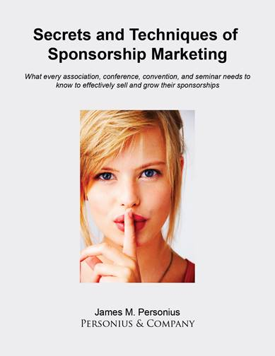

What every association, conference, convention, and seminar needs to know to effectively sell and grow their
sponsorships.
Non-dues revenue is increasingly important to associations, conferences, and events. Yet, these groups struggle with
what to sell to sponsors and how to sell it. Most staff hate selling sponsorships; and definitely do not want to cross sell
or up sell. Most staff have no sales training; nor do they understand the value or benefits of sponsorships. As a result,
associations are leaving thousands to hundreds of thousands of dollars on the table.
Author James Personius said “During the big recession, we noticed some of our clients were continuing to grow
sponsorships and related sales while most associations were suffering and cutting back and blaming the economy. We
began investigating what were the good performers doing differently than the average and poor performers? We want
all of our clients to grow and be successful, so we were looking for good insights and learning experiences. What we
found was shocking, and so informative! We shared the results with all our clients in the form of a consulting white
paper. The feedback was so positive and the clients suggested we publish our white paper as a book, thus the first
edition. The second edition is more readable like a book, less consulting paper in nature.”
In fact, the second edition contains new chapters, examples, and graphical illustrations designed specifically to help
associations and organizations of all sizes increase their business sponsorship revenues.
This book should be required reading for management of all associations, conferences, conventions, seminars, and
similar events that seek sponsorship funding. It will help them get new sponsors and more revenues; it may possibly
save and strengthen some existing sponsorship relationships too.
The 2017 edition has a new, lower price of $60 per book. It is available directly from Personius & Company or through
Amazon.com ISBN 9781548422066.